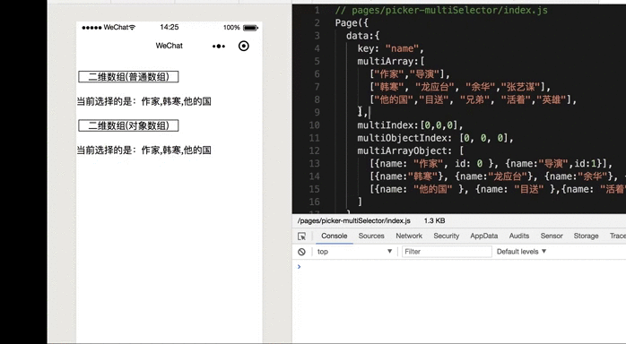

微信小程序基础[13]-小程序中的基础组件(五)
本文介绍小程序中的基础组件，主要包括picker滚动选择器、checkbox多项选择器和progress进度条等组件的基本使用和综合示例。
1.0 progress组件
progress组件就是进度条。
这里列出progress组件的主要属性
color 进度条的颜色(activeColor)。
activeColor 已执行的进度条的颜色。
backgroundColor 尚未执行的进度条的颜色。
percent 百分比的数值，取值范围是0~100。
show-info 在进度条的右侧是否显示百分比，布尔类型，默认值为false。
stroke-width 进度条线的宽度，数值类型，默认值为6，单位是px。
active 是否设置进度条从左到右的动画，布尔类型，默认值为false。
active-mode 设置动画执行的方式，backwards表示 从头播放；forwards表示从上次结束点接着播放。
1 |
|
2.0 多项选择器组件( checkbox-group 和 checkbox )
多项选择器组件由checkbox-group和checkbox两个具体的组件构成，其中checkbox组件表示的是每一个的多选项目，而checkbox-group用来包裹住多个多选项目。通过观察和对比，我们可以发现多项选择器和单项选择器的结构和用法基本是一致的。
checkbox组件
value 当前选项的值。
color 选择框选中时的颜色。
disabled 当前选择框是否被禁用，布尔类型，默认值为false。
checked 当前选择框是否被选中，布尔类型，具有排它性会覆盖。
checkbox-group组件
bindchange 当选中项发生变化时触发change事件并执行绑定的方法，可通过事件对象来获取当前选中项的值(事件对象.detail)。
1 | //001 wxml文件中的内容 |
1 | //002 wxss文件中的内容 |
1 | //003 js文件中的内容 |
这里贴出上面代码的实现效果图。
3.0 picker组件(滚动选择器组件)
picker组件是从页面底部弹出的滚动选择器组件，支持下面五种具体的选择器，通过mode属性的值来进行区分，如果没有设置mode属性，那么默认为普通选择器。
❏ 时间选择器(
time)
❏ 日期选择器(date)
❏ 普通选择器(selector)
❏ 省市区选择器(region)
❏ 多列选择器(multiSelector)
这里给出五种选择器均拥有的属性，对于特点选择器才拥有的属性，我们稍后单独说明。
mode picker组件的类型。
bindchange 当value值改变时触发change事件。
bindcancel 当点击取消选择的时候触发cancel事件。
disabled 控制是否禁用、布尔类型的值，默认为false。
001 普通选择器
在上面列出的是所有滚动选择器类型的组件都拥有的公共属性外，此外普通选择器还拥有range、value和range-key属性，其中range对应的数据可以是简单数组，也可以对象数组。下面列出普通选择器(mode=selector | 默认)组件的主要属性。并提供一个简短的demo演示。
range 可供选择的数据内容(数组 | 对象数组)。
value 表示默认选择的是可选数据中的第几项，索引从0开始。
range-key 当可供选择的数据是对象数组时，通过该属性指定对象元素中作为具体显示内容的key。
ex 普通选择器组件(默认)的代码示例
1 | //001 wxml文件的内容 |
1 | //002 wxss文件的内容 |
1 | //003 js文件的内容 |
这里给出上面代码运行情况的示意图。
002 多列选择器
在使用picker组件的时候，如果mode属性的值为multiSelector那么表示这是一个多列选择器，多列选择器相对普通选择器而言相对复杂一些，因为它的数据源为二维数组,也就是数组中的每个元素都是数组(可以是普通数组也可以是对象数组)。
多列选择器的主要属性
value 表示默认选择的是可选数据中的第几项，索引从0开始。
range 可供选择的数据内容(普通数组 | 对象数组构成的二维数组)。
range-key 当数据是二维对象数组时，指定对象元素中作为显示内容的key。
bindcolumnchange 某列值改变时触发，其中column 表示列数，value` 表示变更值的下标。
ex 多列选择器组件(mode=multiSelector)的代码示例
1 | //001 wxml文件中的内容 |
1 | //002 wxss文件中的内容 |
1 | //003 js文件中的数据和对应的方法 |
这里给出上面代码运行情况的示意图。
说明 上面的代码中演示了多列选择器的基本使用，并且提供了数据源是普通二维数组 以及每个元素是对象数组这种特殊二维数组`两种情况的使用做对照，需要特别注意的是如果二维对象数组，那么必须通过range-key来指定显示的具体内容。
另外在上面的演示代码中，提供的案例里面并没有数据联动的需求。如果在进行多列选择的时候数据需要联动那么我们的数据源以及代码设计可能会更复杂一些，下面给出一个稍微复杂点的示例。
1 | //001 wxml文件中的内容 |
1 | Page({ |
这里给出上面代码运行情况的示意图。
003 时间选择器
时间选择器应该picker组件最简单的一种类型了，当mode属性值为time的时候呈现出来的就是时间选择器，从页面底部滚出的时间选择器可以帮助我们来选择并设置具体的时间(几点几分)。这里先列出主要的属性，再给出一个简短的代码示例。
value 表示选中的时间，格式为”hh:mm”。
end 表示有效时间范围的结尾，限定结束时间。
start 表示有效时间范围的开始，限定开始时间。
1 | //001 wxml文件中的内容 |
004 日期选择器
当picker组件的mode属性值为date的时候，底部弹出的是日期选择器。
日期选择器的主要属性
value 表示选中的日期，格式为"YYYY-MM-DD"。
end 表示有效日期范围的结束，字符串格式为”YYYY-MM-DD”。
start 表示有效日期范围的开始，字符串格式为”YYYY-MM-DD”。
fields 可取的有效值有 year(年),month(月),day(天)三种，表示选择器的粒度。
ex：日期选择器的代码示例
1 | //001 wxml文件中的内容 |
这里给出上面代码运行情况的示意图。
005 省市区选择器
省市区选择器常用于商城类应用的地址管理模块，比如要新建地址或者是编辑地址的时候。当picker组件的mode属性值为region的时候，底部弹出的是省市区选择器。省市区选择器在使用的时候本身也比较简单，主要关注value和custom-item属性和bindchange事件即可。
value 表示选中的省市区，默认选中每一列的第一个值。
custom-item 我们可以通过该属性来为每一列的顶部添加一个自定义的项。
1 | //001 wxml文件的内容 |